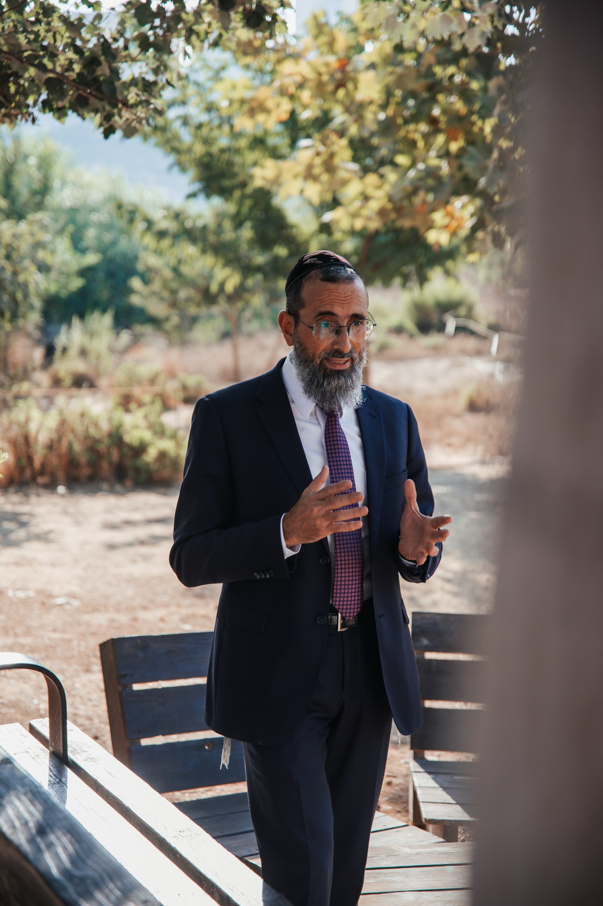

מסלול 01המחזור הבא – בקרוב
קורס פרונטלי
מפגשים קבוצתיים בהנחיית הרב, בקבוצה קטנה ואינטימית, עם ליווי אישי לאורך הדרך.
- מפגשים קבוצתיים בירושלים
- תרגול, שאלות וליווי אישי
- מועדים ומיקום יפורסמו בקרוב
מודל ״המצפן״ של הרב יוסף מלכה הוא תוכנית הכנה לזוגיות לרווקים ולרווקות – לפגישות, לדייטים ולבחירה הנכונה לקראת חתונה, בדרך לזוגיות יציבה ומדויקת.
01למי זה מתאים
המצפן נבנה עבור רווקים ורווקות שרוצים לצאת לדרך מתוך בהירות, ביטחון וכלים – ולא מתוך לחץ או בלבול.
מי שרוצה להתכונן נכון לשלב הפגישות ולדעת מה לחפש.
מי שכבר בדייטים ומרגיש שהוא חוזר על אותן טעויות.
מי שעומד בפני בחירה ורוצה לבדוק אותה בכלים מדויקים.
ארגונים שרוצים להביא את המצפן לקבוצות שלהם.
אלה בדיוק השאלות שהמצפן עונה עליהן – בשיטה מסודרת, שלב אחרי שלב, עם ליווי של הרב.
איך זה עובד02שיטת המצפן
לפני שיוצאים לפגישות, עושים בירור עצמי: מה התכונות והשאיפות שלי, איך אני רואה את הבית ואת הדרך החינוכית – כדי לדעת את מי ואיפה לחפש.
כמו שאנחנו לא מושלמים, גם בן או בת הזוג לא יהיו. החיסרון הוא לא בעיה – הוא פנס שמתווה את הדרך להתאמה, כמו חתיכות פאזל שמשלימות זו את זו.
מידות טובות, יראת שמיים, ערכים משותפים, תקשורת וכבוד הדדי – ולהבדיל בינם לבין פרטים קטנים שפשוט לא התאימו לציפיות.
לפני שאומרים ״זה לא זה״, שואלים מה באמת למדנו בפגישה. ואחרי ההחלטה – מניחים יסודות לבית יציב ושמח, עם ליווי גם אחרי החתונה.
03מה מקבלים
תמונה ברורה של מה אתם מחפשים – ומה לא.
שאלות, תרגילים וכלים לכל שלב בדרך.
יוצאים לפגישות רגועים, מוכנים ובטוחים בעצמכם.
מזהים מוקדם דפוסים שחוזרים על עצמם.
הרב זמין לשאלות ומלווה גם אחרי הקורס.
ערכים וכלים לבניית בית יהודי יציב ושמח.
04מסלולי המצפן
מפגשים קבוצתיים בהנחיית הרב, בקבוצה קטנה ואינטימית, עם ליווי אישי לאורך הדרך.
כל שיטת המצפן בשיעורים מצולמים – לומדים בקצב שלכם, מכל מקום ובכל זמן.
סדנאות ממוקדות לרווקים ולרווקות, ולקבוצות ומוסדות שרוצים להביא את המצפן אליהם.

05מוביל הקורס
מחנך, מרצה ומנחה זוגיות, שמלווה כבר למעלה מעשרים שנה צעירים, חיילים וזוגות צעירים. מתוך השנים האלה נולד המצפן – שיטה שמחברת בין מקורות היהדות לבין כלים מעשיים, ומלווה את המשתתפים גם אחרי החתונה.
״הפעלנו שתי תוכניות משמעותיות של הדרכת צעירים לקראת חיי נישואין משלב הדייטים. הרב יוסף מלכה הוביל את התוכניות ביד רמה, הצליח להכין אותם לנישואין וליווה אותם גם לאחר החתונה.״יוסי לוי · מנכ״ל עמותת ״נצח יהודה״
06מה אומרות המשתתפות
מתוך משובים של משתתפות בסדרת השיעורים של הרב על הבית היהודי והשידוכים.
בניגוד להרבה רבנים שרק ״מדברים״ על הנושא באופן כללי, הרב הביא לנו תכל׳ס – הכלים והתרגילים שעשינו בכיתה, כמו איך לברר ומה בדיוק להגיד בשידוכים, זה משהו שלא רואים בשום מקום אחר. זה נתן לי המון ביטחון וסדר בראש. זה באמת מעבר לסתם שיעור – זה פשוט ארגז כלים לחיים.
יצאתי עם ארגז כלים מלא ומשמעותי. הרב עוזר להבין לעומק מהי המהות האמיתית של חתונה ושידוכים, איך ניגשים לתהליך בצורה נכונה ואיך להתנהל בתוך השידוך עצמו.
אני חושבת שכל בנות ישראל צריכות לשמוע את הסדרה על שידוכים של הרב מלכה, כדי לבנות בית עם זוגיות בריאה ונכונה. השיעורים מעשיים לחיים וניתנים שלב אחרי שלב.
למדתי איך גבר ואישה שונים, מה הדברים החשובים שצריך לדעת – להבין שכל אחד שונה ולא לשפוט רק ״לפי הנעליים שלי״.
הרצאה מגוונת, עם הומור והרבה חומר למחשבה. השיעורים נתנו לי הקדמה מעולה לתקופת השידוכים ומבט מיוחד עם שימת לב לפרטים החשובים.
השיעורים הועברו בצורה ברורה ומעניינת, ונתנו כלים חשובים מאוד לעולם השידוכים – איך ניגשים לנושא ומה חשוב לדעת.
07מאמרים מאת הרב
08שאלות ותשובות

לרווקים ולרווקות שרוצים להתכונן נכון לשלב הפגישות, לאלה שכבר נמצאים בדייטים, ולכל מי שעומד בפני החלטה ורוצה לבחור מתוך בהירות.
הקורס הפרונטלי מתקיים בקבוצה קטנה עם הרב ומאפשר שיח ותרגול בזמן אמת. הקורס הדיגיטלי כולל את כל שיטת המצפן בשיעורים מצולמים, ולומדים בו בקצב שלכם.
כן. לאורך הקורס יש אפשרות לליווי ולשאלות אישיות, ובקורס הפרונטלי – גם שיחה אישית.
המועדים של המחזור הפרונטלי הבא עוד לא נקבעו. השאירו פרטים ונעדכן אתכם ראשונים.
בהחלט. הסדנאות מותאמות לקהילות, לארגונים ולמוסדות, ואפשר להזמין אותן לכל מקום בארץ.
09הצטרפות
השאירו פרטים ונחזור אליכם עם כל המידע על המסלול שמעניין אתכם.